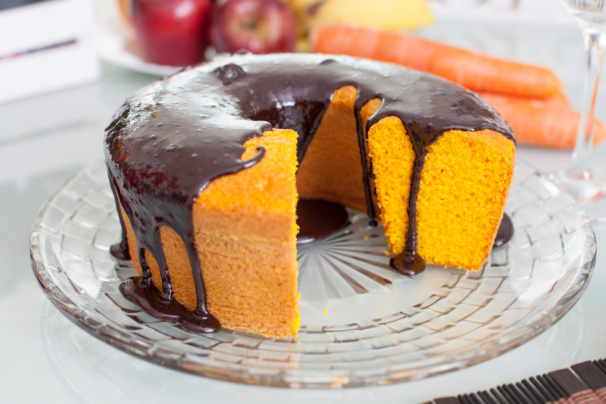

Bolo de Cenoura

Um clássico brasileiro, o bolo de cenoura com cobertura de chocolate!
Ingredientes:
- 3 cenouras médias raladas
- 4 ovos
- 1 xícara de óleo
- 2 xícaras de açúcar
- 2 xícaras de farinha de trigo
- 1 colher de sopa de fermento em pó
Bolo de Limão
Bolo leve e refrescante com o sabor cítrico do limão!
Ingredientes:
- 3 ovos
- 1 xícara de óleo
- 1 xícara de suco de limão
- 2 xícaras de açúcar
- 2 xícaras de farinha de trigo
- 1 colher de sopa de fermento em pó
Bolo de Laranja
Bolo perfumado e suculento com o delicioso sabor da laranja!
Ingredientes:
- 3 ovos
- 1 xícara de suco de laranja
- 1 xícara de óleo
- 2 xícaras de açúcar
- 2 xícaras de farinha de trigo
- 1 colher de sopa de fermento em pó